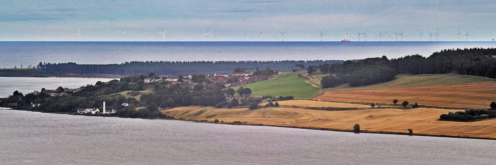

스코틀랜드 니어트나가오이스 해상풍력 공동체기금, 동래머뮤어 주민단체 3곳에 11만 파운드 넘게…주택 단열에 4만5,000파운드

주민 심사단이 주민이 만든 '지역 장소 계획' 목표에 맞춰 배분…이번 회차는 가구 에너지효율과 생물다양성에 집중
스코틀랜드 이스트로디언 동래머뮤어(East Lammermuir)의 공동체 단체 3곳이 니어트나가오이스(Neart na Gaoithe, NnG) 해상풍력 공동체이익기금에서 모두 11만 파운드 넘게 지원을 받았다. 지역 공동체이익회사 로디언 히트(Lothian Heat)는 마을 단위로 주택 난방과 자재를 함께 고치는 '따뜻한 집' 단열 사업에 4만5,000파운드를, 서스테이닝 던바(Sustaining Dunbar)는 물길 옆 완충지대와 습지를 만드는 '서밋투시(Summit2Sea)' 사업에 4만1,000파운드를, 이스트로디언 기후행동네트워크는 산울타리 복원을 맡을 전담 인력 사업에 2만4,500파운드를 받았다. 기금은 EDF 파워솔루션 UK와 아일랜드 ESB가 함께하는 풍력사업이 내는 것으로, 사업자는 주민과 지역 공동체위원회, 독립 자선단체 파운데이션 스코틀랜드와 함께 기금의 운영과 지원 대상을 정하는 공동체 주도 방식을 만들었다. 배분은 지역 주민으로 꾸린 심사단이 결정하며 주민들이 직접 만든 '지역 장소 계획(Local Place Plan)'의 목표를 기준으로 삼는데, 이번 회차에는 가구 에너지효율 개선과 생물다양성 두 목표에 맞췄다. 동래머뮤어 공동체위원회 의장이자 심사단 위원인 크리스 브루스(Chris Bruce)는 지역의 우선순위가 "실제 사업으로 바뀌는 것"을 보니 고무적이라며, 단열 사업이 풍력단지 건설 공사 현장과 가장 가까운 가구들에 실질적인 도움이 될 것이라고 말했다.
시민에너지 관점
이번 배분에서 가장 큰 몫인 4만5,000파운드가 공사 현장과 가장 가까운 가구의 단열에 돌아간 것은, 발전사업의 이익이 지역에 머물 때 곧바로 에너지복지로 이어질 수 있음을 보여 준다. 기금만 잘 나눠도 충분하지 않으냐는 물음이 나올 수 있지만, 이 풍력단지는 기업 소유여서 기금의 크기와 기간은 사업자가 정하고 주민은 나눠 쓰는 일만 결정한다. 웨일스 정부가 새 재생에너지 사업에 지역 소유 몫을 담도록 정책 목표를 세운 것도, 주민이 수익을 받는 데서 그치지 않고 발전소의 주인으로 결정에 참여해야 이익이 오래 지역에 남기 때문이다. 국내 해상풍력 사업에서도 주민 몫을 기금 배분에 그치게 하지 말고, 주민 심사단과 주민 계획에 따른 배분, 나아가 주민 지분 참여까지 제도에 담아야 한다.
출처: 스코티시 하우징 뉴스(Scottish Housing News) 2026-10-26 기자 미표기 원문 보기
スコットランドのニアト・ナ・ガイヒ洋上風力コミュニティー基金、イースト・ラマミュアの住民団体3つに11万ポンド超…住宅断熱に4万5,000ポンド
住民がつくった「地域プレイス計画」の目標に沿って住民審査団が配分…今回は家庭のエネルギー効率と生物多様性に重点
スコットランド・イーストロージアンのイースト・ラマミュア（East Lammermuir）で、地域団体3つがニアト・ナ・ガイヒ（Neart na Gaoithe、NnG）洋上風力のコミュニティー利益基金から計11万ポンドを超える助成を受けた。地域のコミュニティー利益会社ロージアン・ヒート（Lothian Heat）は、地区単位で住宅の暖房と建材をまとめて改善する「暖かい家」断熱事業に4万5,000ポンド、サステイニング・ダンバー（Sustaining Dunbar）は水路沿いの緩衝帯や湿地をつくる「サミット・トゥ・シー（Summit2Sea）」事業に4万1,000ポンド、イーストロージアン気候行動ネットワークは生け垣の復元を担う専任職員の事業に2万4,500ポンドを受けた。基金はEDFパワーソリューションズUKとアイルランドのESBが共同で手がける風力事業が拠出するもので、事業者は住民や地域のコミュニティー評議会、独立慈善団体ファウンデーション・スコットランドとともに、基金の運営と支援対象を決めるコミュニティー主導の仕組みをつくった。配分は地域住民でつくる審査団が決め、住民自らがつくった「地域プレイス計画（Local Place Plan）」の目標を基準にしており、今回は家庭のエネルギー効率の改善と生物多様性の2つの目標に合わせた。イースト・ラマミュア・コミュニティー評議会の議長で審査団の委員でもあるクリス・ブルース（Chris Bruce）氏は、地域の優先課題が「実際の事業に変わっていく」のを見るのは心強いとし、断熱事業は風力発電所の建設工事現場に最も近い世帯に実際の助けになるだろうと話した。
市民エネルギーの視点
今回の配分で最も大きい4万5,000ポンドが工事現場に最も近い世帯の断熱に回ったことは、発電事業の利益が地域にとどまれば、すぐにエネルギー福祉につながりうることを示している。基金をうまく配るだけで十分ではないかという問いもあるだろうが、この風力発電所は企業の所有で、基金の規模や期間は事業者が決め、住民が決めるのは配り方だけだ。ウェールズ政府が新たな再エネ事業に地域所有の持ち分を盛り込むよう政策目標を掲げたのも、住民が収益を受け取るだけでなく、発電所の持ち主として意思決定に加わってこそ、利益が長く地域に残るからだ。韓国の洋上風力事業でも、住民の取り分を基金の配分で終わらせず、住民審査団と住民計画に基づく配分、さらに住民の出資参加まで制度に盛り込むべきだ。
出典: スコティッシュ・ハウジング・ニュース（Scottish Housing News） 2026-10-26 記者名なし 原文を読む
苏格兰尼尔特纳盖赫海上风电社区基金向东拉默缪尔3个居民团体拨款逾11万英镑，其中4.5万英镑用于住宅保温
由居民评审团按居民制定的"地方场所规划"目标分配；本轮聚焦家庭能效和生物多样性
苏格兰东洛锡安东拉默缪尔（East Lammermuir）的3个社区团体，从尼尔特纳盖赫（Neart na Gaoithe，NnG）海上风电社区利益基金共获得逾11万英镑资助。当地社区利益公司洛锡安热能（Lothian Heat）的"温暖家园"保温项目以片区为单位整体改造住宅供暖和建材，获得4.5万英镑；"持续邓巴"（Sustaining Dunbar）在水道旁建设缓冲带和湿地的"从山顶到大海"（Summit2Sea）项目获得4.1万英镑；东洛锡安气候行动网络聘请专职人员修复树篱的项目获得2.45万英镑。该基金由EDF电力解决方案英国公司与爱尔兰ESB共同开发的风电项目出资，开发方与居民、当地社区委员会以及独立慈善机构苏格兰基金会一起，建立了由社区主导决定基金运作和资助对象的机制。拨款由当地居民组成的评审团决定，并以居民亲自制定的"地方场所规划"（Local Place Plan）目标为依据，本轮聚焦改善家庭能效和生物多样性两项目标。东拉默缪尔社区委员会主席、评审团成员克里斯·布鲁斯（Chris Bruce）表示，看到本地优先事项"变成实际项目"令人鼓舞，保温项目将为离风电场施工现场最近的家庭带来切实帮助。
市民能源视角
本轮最大一笔4.5万英镑用于离施工现场最近家庭的住宅保温，说明发电项目的收益留在当地时，可以直接转化为能源福利。有人会问，把基金分好不就够了吗？但这座风电场归企业所有，基金规模和期限由开发方决定，居民能决定的只是怎么分。威尔士政府提出让新的可再生能源项目纳入本地所有份额的政策目标，正是因为居民不只是领取收益，而要作为电站的主人参与决策，收益才能长久留在当地。韩国的海上风电项目也不应让居民份额止步于基金分配，而应把居民评审团、按居民规划分配，乃至居民持股参与都写进制度。
来源: 《苏格兰住房新闻》（Scottish Housing News） 2026-10-26 未署名 查看原文
Scotland's Neart na Gaoithe offshore wind community fund awards more than 110,000 pounds to three East Lammermuir groups, 45,000 pounds of it for home insulation
A panel of local residents allocates the money against goals in a resident-written Local Place Plan; this round focused on household energy efficiency and biodiversity
Three community groups in East Lammermuir, East Lothian, Scotland, have received more than 110,000 pounds in total from the Neart na Gaoithe (NnG) Offshore Wind Farm Community Benefit Fund. Lothian Heat, a local community interest company, was awarded 45,000 pounds for its Warm Homes project, an area-based retrofit that looks at heating upgrades and building materials across whole houses; Sustaining Dunbar received 41,000 pounds for its Summit2Sea project to create buffers along watercourses and new wetland areas; and East Lothian Climate Action Network was given 24,500 pounds for a dedicated officer to restore hedgerows. The fund is paid by the wind farm developed jointly by EDF power solutions UK and Ireland's ESB, which worked with residents, the local community council and the independent charity Foundation Scotland to set up a community-led approach to how the fund is run and what it supports. Awards are decided by a panel of local residents against goals set out in the Local Place Plan that residents drew up themselves, and this round focused on two of them, improving household energy efficiency and biodiversity. Chris Bruce, chair of East Lammermuir Community Council and a panel member, said it was encouraging to see local priorities "being turned into projects on the ground" and that the insulation work would make a practical difference to the households living closest to the wind farm's construction works.
Citizen Energy View
That the largest award, 45,000 pounds, went to insulating the homes nearest the construction works shows how quickly the gains from a power project can become energy welfare when they stay in the area. Some will ask whether a well-distributed fund is enough, but this wind farm is company-owned, so the developer sets the size and duration of the fund and residents decide only how to share it out. The Welsh Government has set a policy goal for new renewable projects to include an element of local ownership precisely because benefits stay in an area for longer when residents take part in decisions as owners, not just as recipients. Korea's offshore wind projects should not stop at handing residents a fund; their rules should build in resident panels, allocation by local plans and, beyond that, resident equity.
Source: Scottish Housing News 2026-10-26 No byline Read the original